GLODAPv2_2016: Mapped Climatologies
Jens Daniel Müller
02 July, 2021
Last updated: 2021-07-02
Checks: 7 0
Knit directory: emlr_obs_preprocessing/
This reproducible R Markdown analysis was created with workflowr (version 1.6.2). The Checks tab describes the reproducibility checks that were applied when the results were created. The Past versions tab lists the development history.
Great! Since the R Markdown file has been committed to the Git repository, you know the exact version of the code that produced these results.
Great job! The global environment was empty. Objects defined in the global environment can affect the analysis in your R Markdown file in unknown ways. For reproduciblity it’s best to always run the code in an empty environment.
The command set.seed(20200707) was run prior to running the code in the R Markdown file. Setting a seed ensures that any results that rely on randomness, e.g. subsampling or permutations, are reproducible.
Great job! Recording the operating system, R version, and package versions is critical for reproducibility.
Nice! There were no cached chunks for this analysis, so you can be confident that you successfully produced the results during this run.
Great job! Using relative paths to the files within your workflowr project makes it easier to run your code on other machines.
Great! You are using Git for version control. Tracking code development and connecting the code version to the results is critical for reproducibility.
The results in this page were generated with repository version ba6b773. See the Past versions tab to see a history of the changes made to the R Markdown and HTML files.
Note that you need to be careful to ensure that all relevant files for the analysis have been committed to Git prior to generating the results (you can use wflow_publish or wflow_git_commit). workflowr only checks the R Markdown file, but you know if there are other scripts or data files that it depends on. Below is the status of the Git repository when the results were generated:
Ignored files:
Ignored: .Rhistory
Ignored: .Rproj.user/
Ignored: data/
Unstaged changes:
Modified: code/Workflowr_project_managment.R
Note that any generated files, e.g. HTML, png, CSS, etc., are not included in this status report because it is ok for generated content to have uncommitted changes.
These are the previous versions of the repository in which changes were made to the R Markdown (analysis/read_OceanSODA.Rmd) and HTML (docs/read_OceanSODA.html) files. If you’ve configured a remote Git repository (see ?wflow_git_remote), click on the hyperlinks in the table below to view the files as they were in that past version.
| File | Version | Author | Date | Message |
|---|---|---|---|---|
| html | ad81465 | jens-daniel-mueller | 2021-06-17 | Build site. |
| Rmd | 3bc04be | jens-daniel-mueller | 2021-06-17 | derive air sea disequilibrium |
| html | 240c1f4 | jens-daniel-mueller | 2021-06-07 | Build site. |
| Rmd | 2730067 | jens-daniel-mueller | 2021-06-07 | write preprocessed file |
| html | 4df00b5 | jens-daniel-mueller | 2021-06-07 | Build site. |
| Rmd | f16f718 | jens-daniel-mueller | 2021-06-07 | added multi parameter analysis global trends |
| html | 8186273 | jens-daniel-mueller | 2021-06-07 | Build site. |
| Rmd | 663eb4d | jens-daniel-mueller | 2021-06-07 | added multi parameter analysis |
| html | efc80ab | jens-daniel-mueller | 2021-06-07 | Build site. |
| Rmd | 0f42222 | jens-daniel-mueller | 2021-06-07 | improved revelle factor analysis |
| html | 265c4ef | jens-daniel-mueller | 2021-06-04 | Build site. |
| Rmd | 00065c8 | jens-daniel-mueller | 2021-06-04 | included OceanSODA |
1 Read source files
# use only three basin to assign general basin mask
# ie this is not specific to the MLR fitting
basinmask <- basinmask %>%
filter(MLR_basins == "2") %>%
select(lat, lon, basin_AIP)OceanSODA <-
tidync(paste(
path_updata,
"pco2_OceanSODA-ETHZ/OceanSODA-ETHZ_1985-2019_v2020b.nc",
sep = ""
))
OceanSODA <- OceanSODA %>%
hyper_tibble()
OceanSODA <- OceanSODA %>%
mutate(date = as.Date(time, origin = '1985-01-01'),
year = year(date))
OceanSODA <- OceanSODA %>%
select(year, date, lat, lon,
sal = salinity, temp = temperature,
tco2 = DIC, talk = TA,
rev_fac = revelle_factor,
pCO2)
OceanSODA <- OceanSODA %>%
mutate(lon = if_else(lon < 20, lon + 360, lon))
OceanSODA <- inner_join(OceanSODA, basinmask)path_SeaFlux <-
paste0(path_updata,"pco2_SeaFlux/")
icefrac <-
tidync(paste0(path_SeaFlux,
"SeaFluxV2021.01_icefrac_1988-2018.nc")) %>%
hyper_tibble()
icefrac <- icefrac %>%
mutate(date = as.Date(time, origin = '1988-01-01'),
year = year(date))
kw <-
tidync(paste0(path_SeaFlux,
"SeaFluxV2021.01_kwScaled16.5cmhr_1988-2018.nc"))
kw <- kw %>%
hyper_filter(wind = wind == "ERA5") %>%
hyper_tibble() %>%
select(-wind)
pCO2atm <-
tidync(paste0(path_SeaFlux,
"SeaFluxV2021.01_pCO2atm_NOAAmbl_ERA5mslp_1988-2018.nc")) %>%
hyper_tibble()
sol <-
tidync(paste0(path_SeaFlux,
"SeaFluxV2021.01_solWeis74.nc")) %>%
hyper_tibble()
all_variables <- full_join(icefrac, kw)
all_variables <- full_join(all_variables, pCO2atm)
all_variables <- full_join(all_variables, sol)
all_variables <- all_variables %>%
mutate(lon = if_else(lon < 20, lon + 360, lon))
OceanSODA <- inner_join(all_variables %>% select(-c(time)),
OceanSODA)all_variables <- OceanSODA %>%
select(
time_mon = date,
lon,
lat,
spco2 = pCO2,
pco2atm = pCO2atm,
fice = ice,
alpha = sol_Weiss74,
Kw = kw_scaled
) %>%
drop_na()
all_variables <- all_variables %>%
mutate(area = earth_surf(lat = lat))
mol_to_g <- 12
P <- 1e-15
cm_to_m <- 100
hr_to_yr <- 24 * 365
unit_conversion_to_PgCyr <- mol_to_g * P * hr_to_yr / cm_to_m
all_variables <- all_variables %>%
mutate(
delta_pco2 = spco2 - pco2atm,
scale = area * Kw * alpha * (1 - fice),
fgco2 = delta_pco2 * scale
)
delta_pco2_monthly <- all_variables %>%
group_by(time_mon) %>%
summarise(
scaling_glob = sum(scale),
fgco2_glob = sum(fgco2),
delta_pco2_glob = fgco2_glob / scaling_glob
) %>%
ungroup() %>%
mutate(fgco2_glob = fgco2_glob * unit_conversion_to_PgCyr)
delta_pco2_annual <- delta_pco2_monthly %>%
mutate(year = year(time_mon)) %>%
group_by(year) %>%
summarise(
scaling_glob = mean(scaling_glob),
fgco2_glob = mean(fgco2_glob),
delta_pco2_glob = mean(delta_pco2_glob)
) %>%
ungroup()
print(
ggplot() +
geom_path(data = delta_pco2_monthly,
aes(
decimal_date(time_mon), delta_pco2_glob, col = "monthly"
)) +
geom_path(data = delta_pco2_annual,
aes(year, delta_pco2_glob, col = "annual")) +
scale_color_brewer(palette = "Set1", name = "Average") +
labs(x = "year")
)
| Version | Author | Date |
|---|---|---|
| ad81465 | jens-daniel-mueller | 2021-06-17 |
print(
ggplot() +
geom_path(data = delta_pco2_monthly,
aes(decimal_date(time_mon), fgco2_glob, col = "monthly")) +
geom_path(data = delta_pco2_annual,
aes(year, fgco2_glob, col = "annual")) +
scale_color_brewer(palette = "Set1", name = "Average") +
labs(x = "year")
)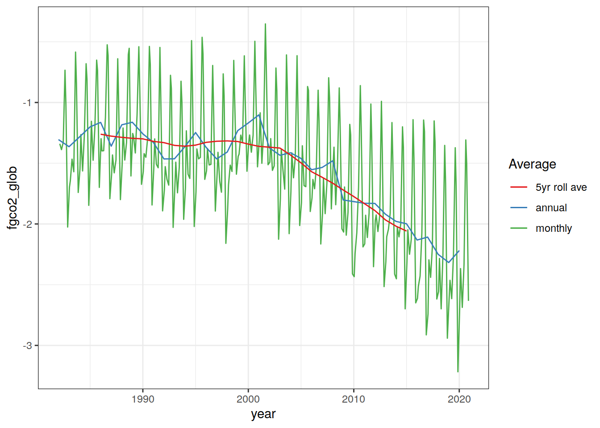
| Version | Author | Date |
|---|---|---|
| ad81465 | jens-daniel-mueller | 2021-06-17 |
print(ggplot() +
geom_path(data = delta_pco2_annual,
aes(
year,
scaling_glob * unit_conversion_to_PgCyr
)))
| Version | Author | Date |
|---|---|---|
| ad81465 | jens-daniel-mueller | 2021-06-17 |
print(
ggplot() +
geom_path(
data = delta_pco2_annual,
aes(
year,
scaling_glob * delta_pco2_glob * unit_conversion_to_PgCyr,
col = "scaled"
)
) +
geom_path(data = delta_pco2_annual,
aes(year, fgco2_glob, col = "integrated")) +
scale_color_brewer(palette = "Set1", name = "Estimate") +
scale_y_continuous(name = "Air-sea flux [PgC yr-1]") +
labs(x = "year")
)
| Version | Author | Date |
|---|---|---|
| ad81465 | jens-daniel-mueller | 2021-06-17 |
# write raw data file for GLODAP-based subsetting model variables
delta_pco2_annual %>%
select(-c(scaling_glob, fgco2_glob)) %>%
write_csv(file = paste(
path_preprocessing,
"OceanSODA_disequilibrium_annual.csv",
sep = ""
))
rm(delta_pco2_annual,
delta_pco2_monthly)# calculate annual averaged fields
OceanSODA_annual_all <- OceanSODA %>%
mutate(tco2_over_pCO2 = tco2 / pCO2) %>%
group_by(year, lat, lon) %>%
summarise_if(is.numeric, mean, na.rm = TRUE) %>%
ungroup() %>%
mutate(grid_area = earth_surf(lat = lat))
# grid data in space and time, remove data outside grid
OceanSODA_annual <- OceanSODA_annual_all %>%
mutate(
grid_area = earth_surf(lat = lat),
lat_bands = cut(lat, seq(-80, 80, 20)),
decade = cut(year,
seq(1990, 2020, 10),
right = FALSE,
labels = c("1990-1999", "2000-2009", "2010-2019"))
) %>%
drop_na()
# calculate climatological fields
OceanSODA_clim <- OceanSODA_annual %>%
select(-c(year, grid_area)) %>%
group_by(lat, lon) %>%
summarise_if(is.numeric, mean, na.rm = TRUE) %>%
ungroup()
# calculate area-weighted annual mean within latitude band
OceanSODA_annual_lat <- OceanSODA_annual %>%
pivot_longer(sal:tco2_over_pCO2,
names_to = "parameter",
values_to = "value") %>%
mutate(value_area = value * grid_area) %>%
group_by(year, lat_bands, decade, parameter) %>%
summarise(
area_total = sum(grid_area),
value_area_total = sum(value_area),
value_area_ave = value_area_total / area_total
) %>%
ungroup() %>%
select(-c(area_total,value_area_total))
# fit decadel linear trends per latitude band
OceanSODA_annual_lat_trend <- OceanSODA_annual_lat %>%
nest(data = -c(decade, lat_bands, parameter)) %>%
mutate(tidy = map(data,
~tidy(lm(value_area_ave ~ year, data = .x)))) %>%
select(-data) %>%
unnest(tidy)
# calculate area-weighted annual mean globally
OceanSODA_annual_glob <- OceanSODA_annual %>%
pivot_longer(sal:tco2_over_pCO2,
names_to = "parameter",
values_to = "value") %>%
mutate(value_area = value * grid_area) %>%
group_by(year, decade, parameter) %>%
summarise(
area_total = sum(grid_area),
value_area_total = sum(value_area),
value_area_ave = value_area_total / area_total
) %>%
ungroup() %>%
select(-c(area_total,value_area_total))
# fit decadel linear trends globally
OceanSODA_annual_glob_trend <- OceanSODA_annual_glob %>%
nest(data = -c(decade, parameter)) %>%
mutate(tidy = map(data,
~tidy(lm(value_area_ave ~ year, data = .x)))) %>%
select(-data) %>%
unnest(tidy)OceanSODA_annual_all_test <- OceanSODA_annual_all1.1 Write file
OceanSODA_annual_all %>%
write_csv(paste0(path_preprocessing,
"OceanSODA.csv"))1.2 Control plots
map +
geom_raster(data = OceanSODA_annual %>%
filter(year == 2010), aes(lon, lat, fill = lat_bands)) +
scale_fill_brewer(palette = "Spectral") +
labs(title = "Year: 2010")
map +
geom_raster(data = OceanSODA_annual %>%
filter(year == 2010), aes(lon, lat, fill = grid_area)) +
scale_fill_viridis_c() +
labs(title = "Year: 2010")
2 Climatology map
OceanSODA_clim %>%
pivot_longer(sal:tco2_over_pCO2,
names_to = "parameter",
values_to = "value") %>%
group_split(parameter) %>%
# head(1) %>%
map( ~ map +
geom_raster(data = .x,
aes(lon, lat, fill = value)) +
scale_fill_viridis_c(name = .x$parameter))[[1]]
[[2]]
[[3]]
[[4]]
[[5]]
[[6]]
[[7]]
3 Time series
OceanSODA_annual_lat %>%
group_split(parameter) %>%
# head(1) %>%
map(
~ ggplot(data = .x,
aes(year, value_area_ave, col = lat_bands)) +
scale_color_brewer(palette = "Spectral") +
geom_path() +
geom_point() +
labs(y = .x$parameter)
)[[1]]
[[2]]
[[3]]
[[4]]
[[5]]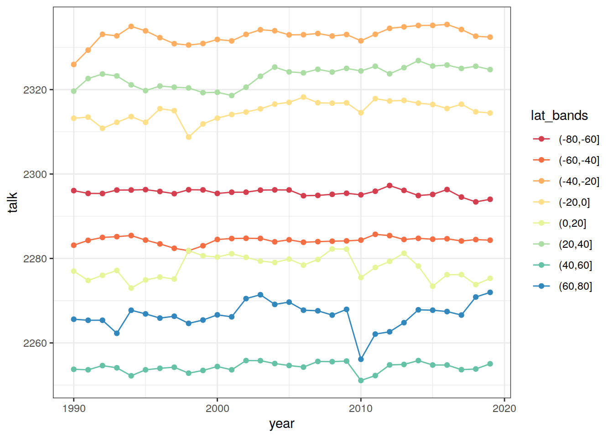
[[6]]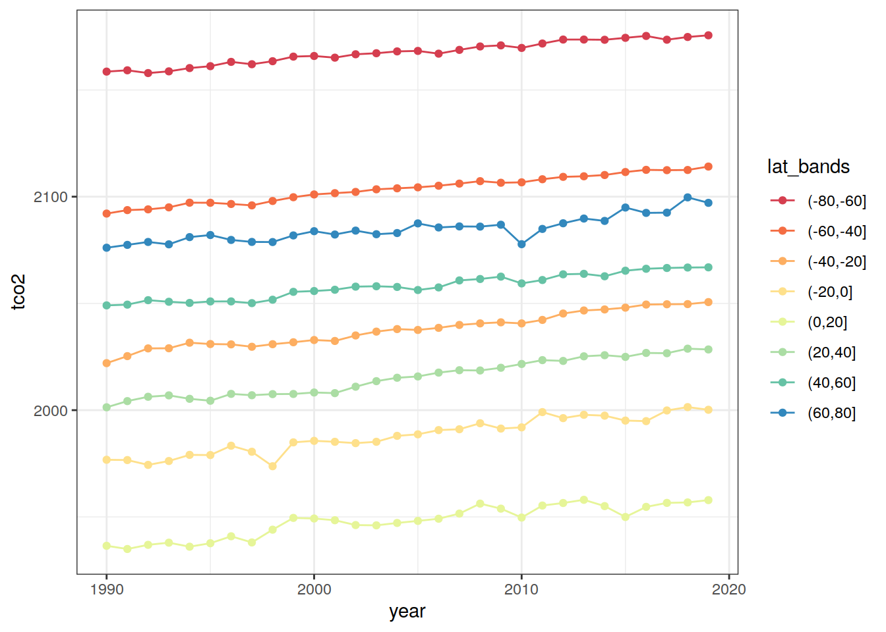
[[7]]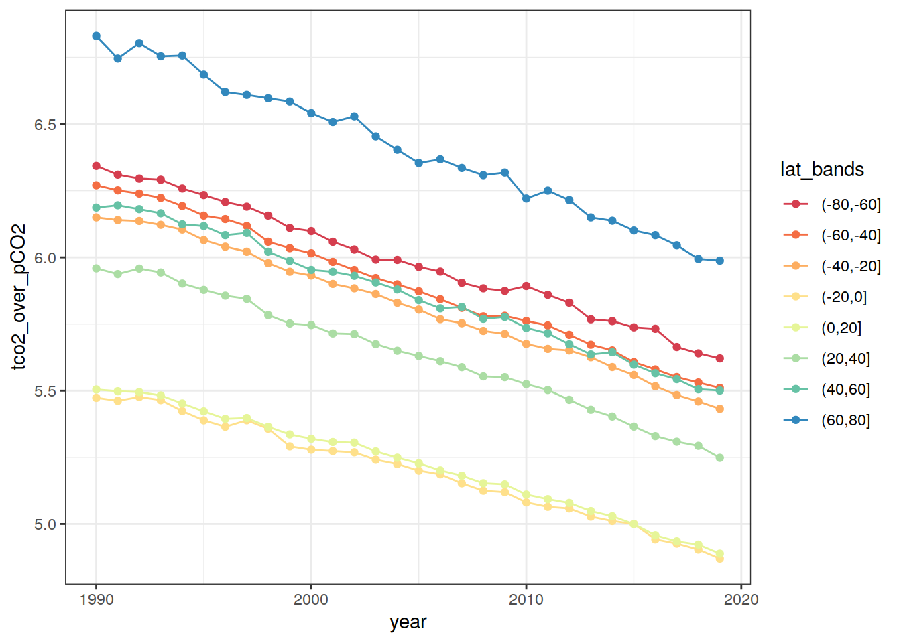
4 Decadel trends
4.1 Global
OceanSODA_annual_glob %>%
group_split(parameter) %>%
# head(1) %>%
map(
~ ggplot(data = .x,
aes(year, value_area_ave, col = decade)) +
scale_color_brewer(palette = "Set1") +
geom_point() +
labs(y = .x$parameter) +
geom_smooth(method = "lm", se = FALSE)
)[[1]]
[[2]]
[[3]]
[[4]]
[[5]]
[[6]]
[[7]]
OceanSODA_annual_glob_trend %>%
filter(term == "year") %>%
group_split(parameter) %>%
# head(1) %>%
map(
~ ggplot(data = .x,
aes(decade, estimate)) +
scale_fill_brewer(palette = "Spectral") +
geom_point(shape = 21) +
geom_path() +
labs(y = paste(.x$parameter, "annual change"))
)[[1]]
[[2]]
[[3]]
[[4]]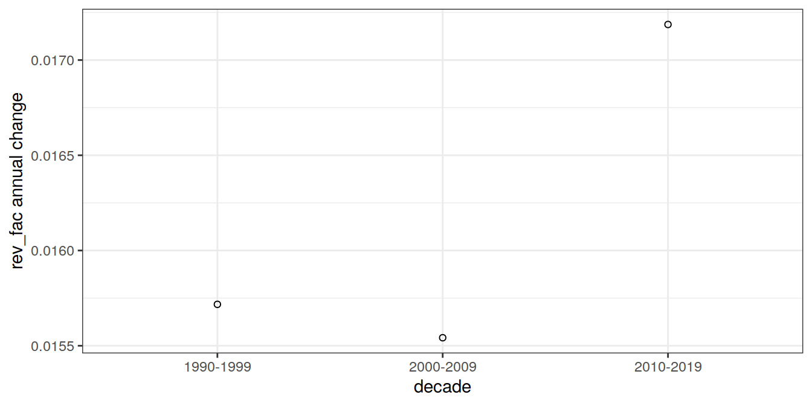
[[5]]
[[6]]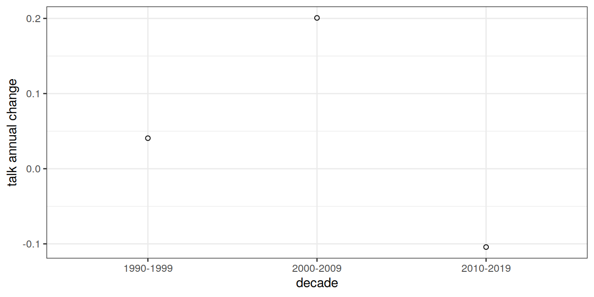
[[7]]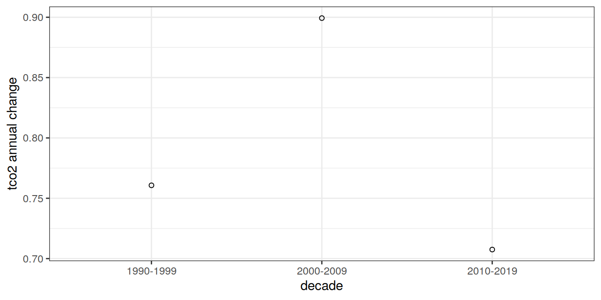
4.2 Latitude bands
OceanSODA_annual_lat %>%
group_split(parameter) %>%
# head(1) %>%
map(
~ ggplot(data = .x,
aes(year, value_area_ave, col = decade)) +
scale_color_brewer(palette = "Set1") +
geom_point() +
labs(y = .x$parameter) +
geom_smooth(method = "lm", se = FALSE) +
facet_wrap( ~ lat_bands)
)[[1]]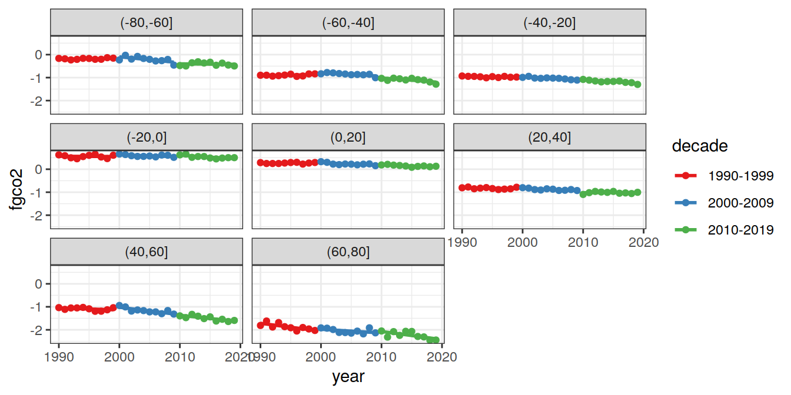
[[2]]
[[3]]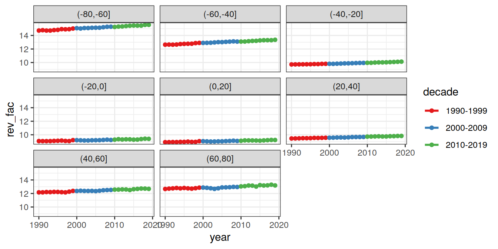
[[4]]
[[5]]
[[6]]
[[7]]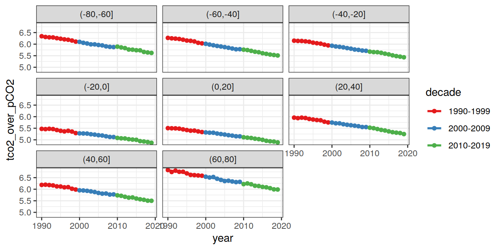
OceanSODA_annual_lat_trend %>%
filter(term == "year") %>%
group_split(parameter) %>%
# head(1) %>%
map(
~ ggplot(data = .x,
aes(decade, estimate, fill = lat_bands)) +
scale_fill_brewer(palette = "Spectral") +
geom_point(shape = 21) +
geom_path() +
labs(y = paste(.x$parameter, "annual change"))
)[[1]]
[[2]]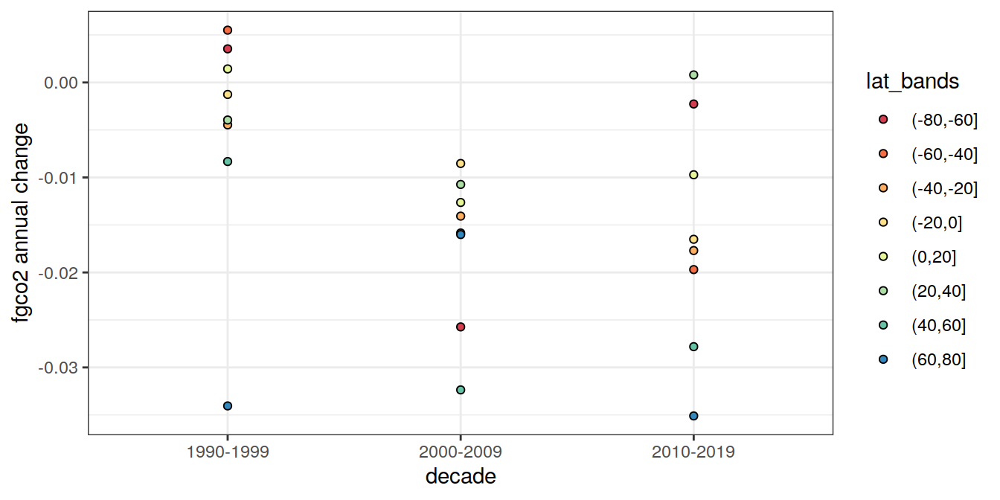
[[3]]
[[4]]
[[5]]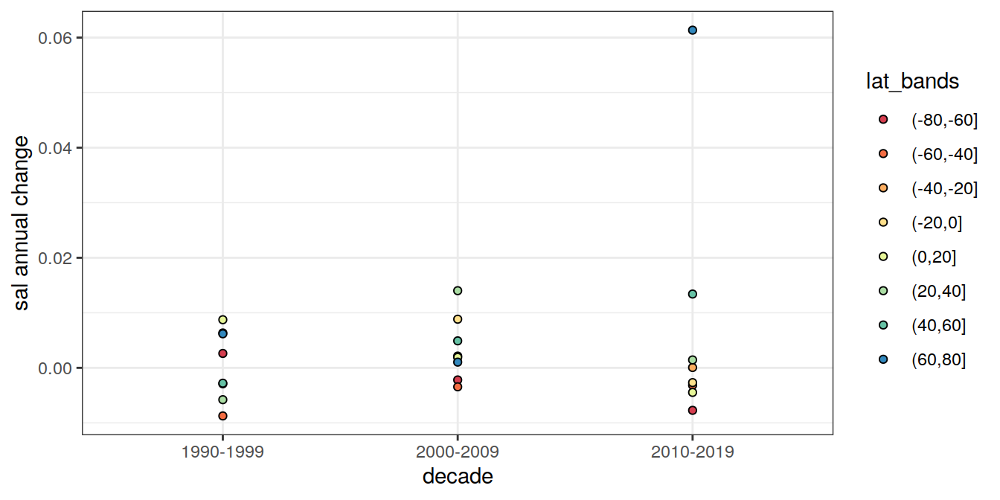
[[6]]
[[7]]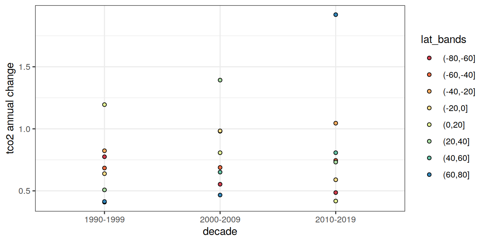
sessionInfo()R version 4.0.3 (2020-10-10)
Platform: x86_64-pc-linux-gnu (64-bit)
Running under: openSUSE Leap 15.2
Matrix products: default
BLAS: /usr/local/R-4.0.3/lib64/R/lib/libRblas.so
LAPACK: /usr/local/R-4.0.3/lib64/R/lib/libRlapack.so
locale:
[1] LC_CTYPE=en_US.UTF-8 LC_NUMERIC=C
[3] LC_TIME=en_US.UTF-8 LC_COLLATE=en_US.UTF-8
[5] LC_MONETARY=en_US.UTF-8 LC_MESSAGES=en_US.UTF-8
[7] LC_PAPER=en_US.UTF-8 LC_NAME=C
[9] LC_ADDRESS=C LC_TELEPHONE=C
[11] LC_MEASUREMENT=en_US.UTF-8 LC_IDENTIFICATION=C
attached base packages:
[1] stats graphics grDevices utils datasets methods base
other attached packages:
[1] broom_0.7.5 marelac_2.1.10 shape_1.4.5 lubridate_1.7.9
[5] tidync_0.2.4 metR_0.9.0 scico_1.2.0 patchwork_1.1.1
[9] collapse_1.5.0 forcats_0.5.0 stringr_1.4.0 dplyr_1.0.5
[13] purrr_0.3.4 readr_1.4.0 tidyr_1.1.2 tibble_3.0.4
[17] ggplot2_3.3.3 tidyverse_1.3.0 workflowr_1.6.2
loaded via a namespace (and not attached):
[1] nlme_3.1-149 fs_1.5.0 gsw_1.0-5
[4] RColorBrewer_1.1-2 httr_1.4.2 rprojroot_2.0.2
[7] tools_4.0.3 backports_1.1.10 R6_2.5.0
[10] mgcv_1.8-33 DBI_1.1.0 colorspace_1.4-1
[13] withr_2.3.0 tidyselect_1.1.0 compiler_4.0.3
[16] git2r_0.27.1 cli_2.1.0 rvest_0.3.6
[19] RNetCDF_2.4-2 xml2_1.3.2 labeling_0.4.2
[22] scales_1.1.1 checkmate_2.0.0 digest_0.6.27
[25] rmarkdown_2.5 oce_1.2-0 pkgconfig_2.0.3
[28] htmltools_0.5.0 dbplyr_1.4.4 rlang_0.4.10
[31] readxl_1.3.1 rstudioapi_0.11 generics_0.0.2
[34] farver_2.0.3 jsonlite_1.7.1 magrittr_1.5
[37] ncmeta_0.3.0 Matrix_1.2-18 Rcpp_1.0.5
[40] munsell_0.5.0 fansi_0.4.1 lifecycle_1.0.0
[43] stringi_1.5.3 whisker_0.4 yaml_2.2.1
[46] grid_4.0.3 blob_1.2.1 parallel_4.0.3
[49] promises_1.1.1 crayon_1.3.4 lattice_0.20-41
[52] splines_4.0.3 haven_2.3.1 hms_0.5.3
[55] seacarb_3.2.14 knitr_1.30 pillar_1.4.7
[58] reprex_0.3.0 glue_1.4.2 evaluate_0.14
[61] RcppArmadillo_0.10.1.2.0 data.table_1.13.2 modelr_0.1.8
[64] vctrs_0.3.5 httpuv_1.5.4 testthat_2.3.2
[67] cellranger_1.1.0 gtable_0.3.0 assertthat_0.2.1
[70] xfun_0.18 RcppEigen_0.3.3.7.0 later_1.1.0.1
[73] ncdf4_1.17 viridisLite_0.3.0 ellipsis_0.3.1